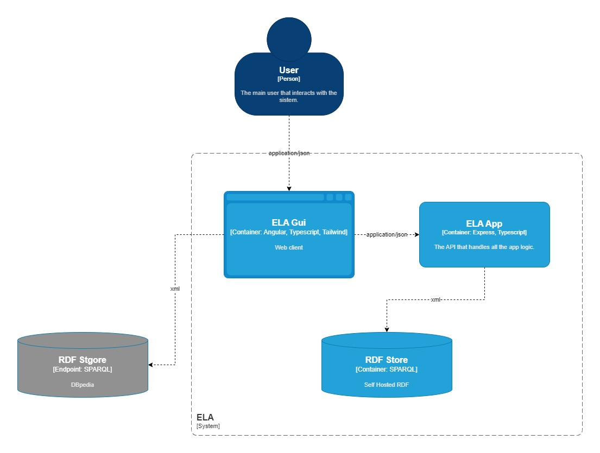

Community Draft
In regards to programming languages, esoteric languages represent unique challenges and opportunities for enthusiasts, researchers, and learners alike. This scholarly documentation introduces a conceptual model and a web-based platform designed to facilitate exploration, learning of esoteric programming languages. Leveraging existing lists of esoteric languages and enriched with knowledge from DBpedia and Wikidata, our system offers a thesaurus-like ontology that categorizes languages based on paradigms, usability, computational class, and other distinguishing features.
The proposed platform serves as a service-oriented architecture, delivering diverse functionalities to users. It enables the best possible language selection for learning, programming, translation into general-purpose languages. By exposing a SPARQL endpoint, the system provides a wealth of information about related tools, including interpreters, compilers, development environments, notable applications, and more.
One of the platform's most notable features is its ability to recommend esoteric programming languages based on a quiz to find the most relevant features of an esoteric language for end users . This recommendation engine enhances the user experience, guiding individuals toward languages that align with their specific interests and objectives.
In the subsequent sections, this documentation presents the systematic construction of our conceptual model, detailing the amalgamation of esoteric language data from diverse sources and the development of an intuitive web interface.
For tracking the history of the application we will use Github because it's a very popular platform for version control. We can even make use of some new feature of this platform such as Github Actions witch is a CI/CD tool very powerful: the artifacts can be stored inside the repository as well as env variables and is integrated with many types of applications: nodejs, java, php, ruby etc.
For tracking the history of the application we will use Github because it's a very popular platform for version control. We can even make use of some new feature of this platform such as Github Actions witch is a CI/CD tool very powerful: the artifacts can be stored inside the repository as well as env variables and is integrated with many types of applications: nodejs, java, php, ruby etc.
Here we can see the mockup of the UI interface we want to implement. The first image is the initial page the user sees. After the start button is pressed then in the second screen the user will be guided to some questions to answer in order to make the recommendation better. After the questions are finished it will be displayed a tables with some information regarding the recommended programming languages that are best suited for learning. For more information, once a row is clicked the last page will appear with more information.
The success of our esoteric programming language exploration platform hinges on a well-structured system architecture. This chapter provides a glimpse into the architecture, highlighting the key components that drive the platform's functionality. The general structure comprises a frontend, a backend, and an RDF store for SPARQL queries, integrated together to offer a cohesive user experience.

Represents the component the user interacts with that will be written in Angular witch is a widely-used open-source web application framework maintained by Google and a community of developers. It's written in TypeScript and facilitates the development of dynamic, single-page web applications. Angular provides a comprehensive set of tools and features that simplify various aspects of web development, including data binding, dependency injection, modularization, and testing. This makes the development easier as every component is treated as a class together with a template and a stylesheet and enforces an organized file structure.
The advantage of using typescript, the language used also for the backend, is using strong data types when needed that makes the code easier to debug and maintain.
It is the server that handles the user requests. Build with Express it follows the REST architecture enforcing us to create endpoints associated with certain resources. The information between the client and the server will be in JSON format because is easy to work with and is translated directly as javascript object. Express is also a very popular lightweight framework that has many libraries that we can use to make our work easier.
In the architecture of our esoteric programming language exploration platform, the RDF store plays a key role in housing the ontology created with the available data (List of esoteric programming languages). We have chosen Apache Jena Fuseki as our RDF store, a robust and scalable solution that seamlessly integrates with the broader semantic web infrastructure.
Apache Jena Fuseki serves as our chosen RDF store due to its efficiency in managing and querying RDF data. It provides a robust and scalable platform for storing ontological information about esoteric programming languages. The RDF store is a critical component, housing the structured knowledge derived from existing lists of languages and enriched through integration with DBpedia and Wikidata.
One crucial component that lets users engage with the RDF store and query and retrieve specific data on esoteric programming languages is the SPARQL endpoint. By offering a user-specific way to explore the rich dataset from the RDF store, it improves the user experience.
Functionality:
Each component will run a docker container in the final stage of the application. This provides several advantages such as isolation, portability, dependency management, scalability, security and we can deploy the components easier in a cloud provider.